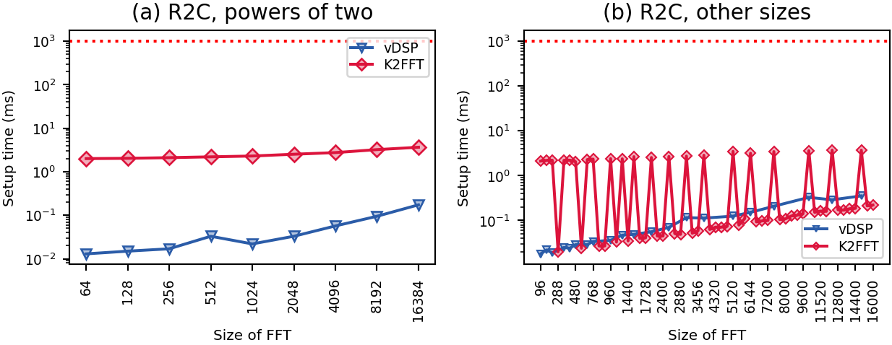
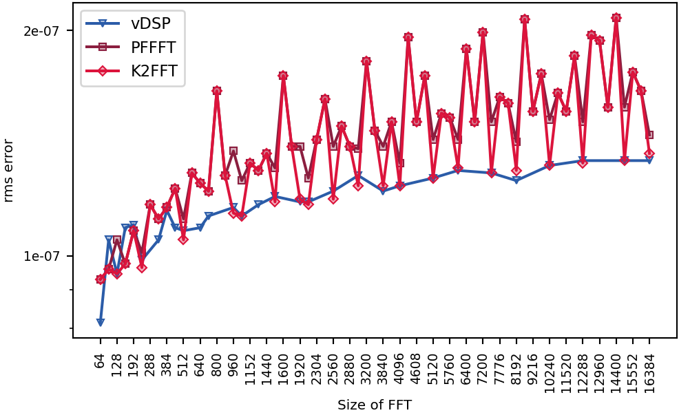

Intel(R) Core(TM) i7-8700B CPU @ 3.20GHz
.
Darwin iad01-dz253-4b65c59d-7471-4022-aba9-3acdea266913-429DEC40F6E7.local 24.6.0 Darwin Kernel Version 24.6.0: Tue Jul 21 20:50:07 PDT 2026; root:xnu-11417.140.69.711.44~1/RELEASE_X86_64 x86_64
Runner image: macos15 20260824.0482.1
Rounds: 5.
Only the single-CPU performance was benchmarked.
Compilers and flags (unless overridden): C AppleClang 17.0.0.17000013 ;
C++ AppleClang 17.0.0.17000013 .
Libraries: CMSISDSP 1.18.0, CMSISCORE 6.4.0, FFTW 3.3.10, IPP 2026.1.0, KFR 7.2.0, NE10 1f059a764d0e, K2FFT commit 5998ca16072a.
Raw data files: macos-x64-universal_intel-core-i7-8700b.speed macos-x64-universal_intel-core-i7-8700b.busy.speed macos-x64-universal_intel-core-i7-8700b.accuracy macos-x64-universal_intel-core-i7-8700b.tbl macos-x64-universal_intel-core-i7-8700b.busy.tbl macos-x64-universal_intel-core-i7-8700b.info macos-x64-universal_intel-core-i7-8700b.sysinfo macos-x64-universal_intel-core-i7-8700b.ctest macos-x64-universal_intel-core-i7-8700b.verdicts macos-x64-universal_intel-core-i7-8700b.fastest macos-x64-universal_intel-core-i7-8700b.measures
Checks: passed. K2FFT: unbeaten at all 67 sizes.
new: macos-x64-universal_intel-core-i7-8700b has no baseline
codes no rival beat in all rounds but one by more than the floor, in each condition; floors 4.0% 8.4%:
- powers of two: vdsp 9, pffft 3 of 9
- other multiples of 32 (PFFFT's sizes): pffft 56, vdsp 17 of 58
- the rest: pocketfft 79, kissfft 5, vdsp 2 of 82